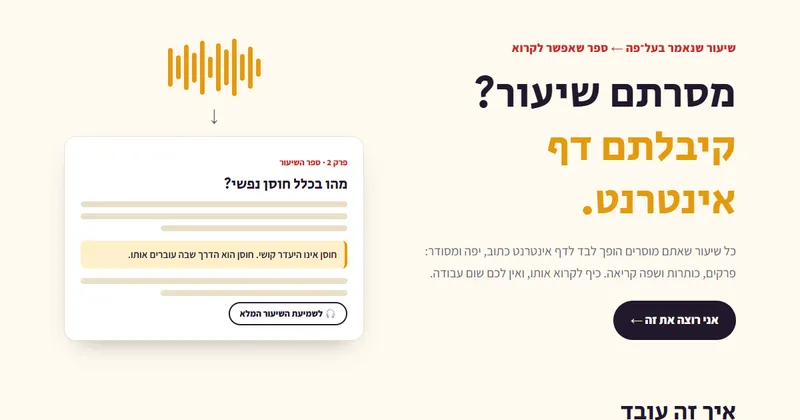

בינה מלאכותית וכלים דיגיטליים
מדריכים ופרומפטים לבינה מלאכותית בהוראה, ואפליקציות שבנינו למורה: הקלטה, דף אינטרנט לשיעור, מדריכי עיצוב
31 פריטים
בינה מלאכותית ופרומפטים למורה (12)
משחק לימודי ב-Gemini Canvas – דוגמה מוכנה
איך יוצרים משחק לימודי עם Gemini: פותחים Canvas, מעלים חומר לימוד ומבקשים "צור משחק לימודי ל-7-10 דקות לכיתה ג…

המהפכה הטכנולוגית בכף ידך: איך Claude AI משנה את חוקי המשחק בפיתוח אפליקציות
בעולם שבו פיתוח אפליקציות נתפס כמיומנות מורכבת השמורה למתכנתים מקצועיים, Claude AI מציע מהפכה של ממש. הבינה המ…

יצירת משחק חינוכי עם קלוד
.

מדריך יצירת משחקי למידה תורניים
הכניסו URL זה בדיוק לתוך הפרומפט. הציונים יגיעו אוטומטית!

מדריך מקיף ומעודכן ליצירת תמונות לחינוך דתי - גרסה 2.0
מתאים למידג'רני, גמה, ו-API אחרים

מדריך מקיף לשכלול מצגות ב-Gamma: רעיונות, תובנות וטכניקות למצגות ברמה גבוהה
Gamma היא פלטפורמה מהפכנית ליצירת מצגות המבוססת על בינה מלאכותית, עם למעלה מ-250 מיליון מצגות שנוצרו ברחבי העו…

מדריך קנבה + בינה מלאכותית | ליאת ונגרובסקי
המדריך המלא ליצירת תכנים חינוכיים מרהיבים

למה חשוב לבקר את הבינה המלאכותית
הבאתי לקלוד את הסיפור הבא מהגמרא: ושוב מעשה ברבי חנינא בן דוסא שהלך ללמוד תורה אצל רבי יוחנן בן זכאי וחלה בנו …
רעיונות לפרומפטים - לעריכת סיפור
🎯 אתה עורך־על לסטוריטלינג חינוכי־רגשי מעורר השראה לילדים בגילאי 6–10. תפקידך: לעבד כל סיפור שמובא אליך – ולהפו…

יצירת כרטיסיות לימוד
שיעור מובנה כמה חלקים "תכין כרטיסיית מידע על ???? הכוללת: שאלה אמריקאית שאלת ידע והבנה שאלה מסדר חשיבה גבוה שא…

פרומפט לניהול דיון כיתתי
המקור קנית אמונה ע''י סיפור לילדים. שאדם מלמד את ילדיו הוא בעצמו זוכה לאמונה , ויש לציין שהתורה מדגישה הרבה מא…

כתיבת הרצאה
שלב 1: הגדרת תפקיד: "דמיין שאתה טוני רובינס, המרצה המוצלח ביותר של TED..." שלב 2: וידוא הבנה: "האם הבנת באופן …
אפליקציות ומדריכי עיצוב (19)

מסרתם שיעור? קיבלתם דף אינטרנט
כל שיעור שאתם מוסרים הופך לבד לדף אינטרנט כתוב ומסודר: פרקים, קישור לשמיעה וחיפוש. לפרטים: יהודה טאוב

יצוא קוד HTML לקובץ
כלי להדבקת קוד HTML ושמירתו כקובץ

מדריך עיצוב 1
מדריך עיצוב HTML – כל הסגנונות 🎨 מדריך עיצוב HTML כל הסגנונות, הצורות, הצבעים והרעיונות – עם פרומפט מוכן לכל א…

מדריך עיצוב 2
מדריך עיצוב HTML – חלק ב' | 40 סגנונות + פרומפטים ✦ חלק ב׳ – עם פרומפטים 40 סגנונות + פרומפט מוכן כל כרטיס כול…

מדריך חלק 3 - גדול
מדריך HTML – חלק ג׳ | 50 סגנונות + פרומפטים ✦ חלק ג׳ – 50 סגנונות + פרומפטים 50 סגנונות + פרומפט לכל אחד 🎬 10 …

מדריך עיצוב 4
מדריך HTML – חינוך יהודי | בנים ובנות | 50 סגנונות 👦 בנים 👧 בנות ✡️ שניהם חינוך יהודי בנים ובנות 50 סגנונות HT…

קטלוג כתבים מלא
✦ קטלוג כתבים מלא ✦ כל סגנון כולל שם הפונט + דוגמה + פרומפט מוכן להעתקה ✍️ קטגוריה א׳ — כתב יד #01 Dancing Scr…

קטלוג כתבים עבריים
מלא ✦ 72 כתבים עבריים ✦ כל סגנון תומך באותיות עבריות — עם פרומפט מוכן לכל בוט 📜 קטגוריה א׳ — Frank Ruhl Libre …

סגנונות של תמונות 1

סגנונות של תמונות

כל סגנונות הדפים שיצרנו
קטלוג מרוכז של תבניות HTML, עם שם הסגנון, מתי להשתמש בו, ומה בדיוק לכתוב בפרומפט כדי לבקש אותו שוב. איך להשתמש…

מדריך ZoomIt למורים
מדריך מהיר ומעשי לשימוש בתוכנה החינמית של Microsoft

ניהול זמן וכלים טכנולוגיים לרב
שלום לכם, אנחנו בשעה טובה במפגש השלישי והאחרון של הקורס שלנו על שימוש בטכנולוגיה ובינה מלאכותית בעבודת הרב. המ…

הופך טקסט ל HTML ו PDF
יצוא קוד HTML לקובץ יצוא קוד HTML לקובץ מוכן הדבק כאן קוד HTML, תן שם לקובץ, ולחץ "הורד קובץ HTML" קוד HTML: ⬇…

מנהל הפרומפטים
מנהל פרומפטים

מקצר שירים לצלצול
חותך שירים חותך שירים העלה קובץ, הגדר זמנים, הורד MP3 🎵 לחץ כדי לבחור קובץ שמע MP3, WAV, OGG, M4A... אורך הקוב…

מפריד אנשים בתמונה
העלה תמונה קבוצתית — הכלי יזהה כל אדם ויחלץ אותו לתמונה נפרדת נוצר על ידי יהודה טאוב נשמח לשמוע איך נהניתם | W…
מקליט: הקלטת שמע ווידאו
מקליטים שיעור, סיפור או שאלה ישירות מהדפדפן, בשמע (MP3) או בווידאו (MP4). כל הקלטה נשמרת במאגר הקול החמישי